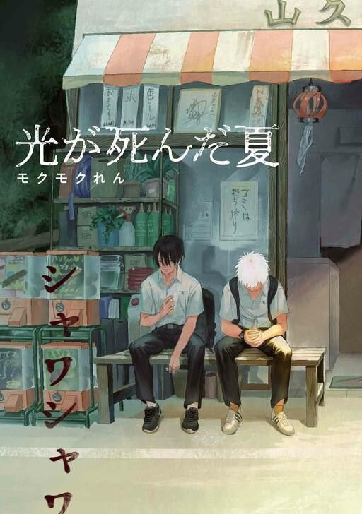

The Summer Hikaru Died
Thể loại: Tâm lý
Mô tả:
The Summer Hikaru Died là một manga kinh dị tâm lý – siêu nhiên lấy bối cảnh vùng quê yên tĩnh ở Nhật Bản. Câu chuyện xoay quanh tình bạn giữa hai thiếu niên, khi một ngày nọ, Hikaru – người bạn thân – trở về nhưng đã không còn là chính cậu ấy nữa. Bộ truyện mang bầu không khí âm u, chậm rãi, tập trung vào nỗi sợ mơ hồ, sự mất mát và cảm xúc giằng xé của con người khi phải đối diện với thứ quen thuộc nhưng đã bị thay thế.
Tóm tắt cốt truyện:
Yoshiki và Hikaru là hai cậu bé lớn lên cùng nhau ở một ngôi làng nhỏ. Một ngày hè nọ, Yoshiki nhận ra rằng Hikaru trước mặt mình không còn là Hikaru thật — dù ngoại hình, giọng nói và ký ức vẫn giống hệt. Yoshiki biết rõ: người bạn của mình đã biến mất, và thứ đang tồn tại chỉ là một thực thể khác mang hình dạng Hikaru. Dù vậy, vì không thể chấp nhận sự thật và vì nỗi cô đơn, Yoshiki vẫn chọn ở bên “Hikaru” ấy. Trong khi đó, những hiện tượng kỳ lạ bắt đầu xuất hiện trong làng, hé lộ mối liên hệ giữa thực thể kia và các thế lực siêu nhiên cổ xưa. Câu chuyện dần đào sâu vào ranh giới giữa con người và dị thể, cũng như câu hỏi đau lòng: nếu người mình yêu quý không còn là chính họ, ta có thể tiếp tục ở bên không?
Bình luận
Vui lòng đăng nhập để bình luận.